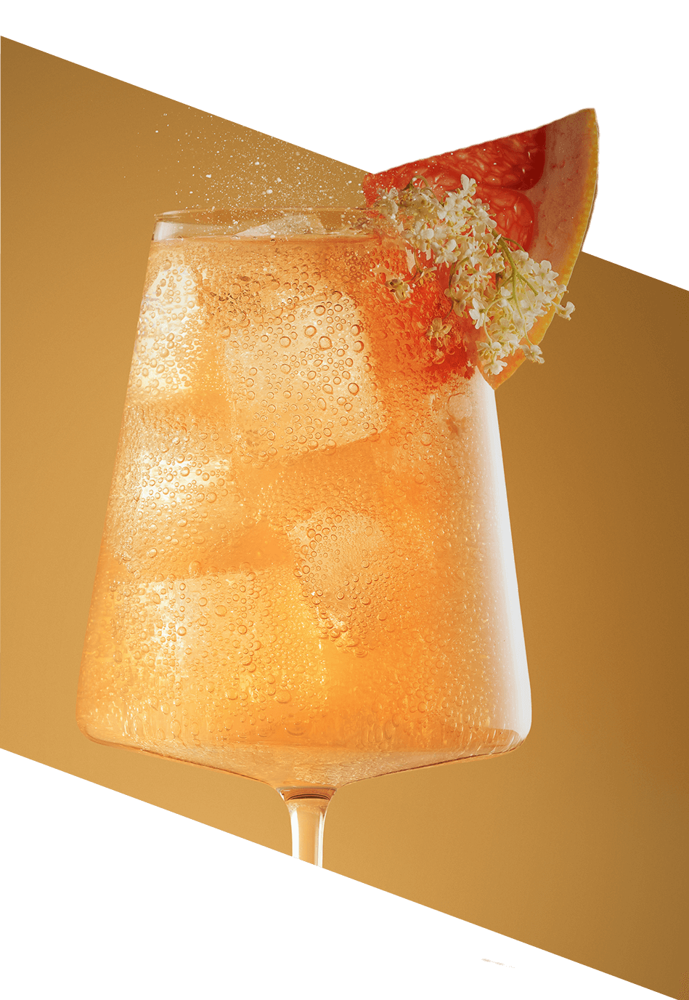

Grejpfrut &
Kwiat Czarnego Bzu
Wyrafinowana kompozycja smaków rześkiego grejpfruta i romantycznych kwiatów czarnego bzu oczaruje Twoich gości
Bezalkoholowa baza do koktajli i moktajli SodaStream Crafted Grejpfrut & Kwiat Czarnego Bzu to wyrafinowane połączenie cytrusowych nut grejpfruta i delikatnej elegancji czarnego bzu. Ten subtelny, a jednocześnie zaskakujący smak przeniesie Cię na wyżyny bąbelkowych doznań, rozbudzając zmysły i chęć na więcej.
Perfekcyjne
koktajle i moktajle
na 1, 2, tssst!
Lubisz spędzać czas relaksując się
w otoczeniu natury? Dodaj tym chwilom orzeźwienia z lemoniadą w
wersji 2.0.
Lekki smak cytrusów z nutką goryczy ugasi pragnienie, a aromatyczny
kwiat
czarnego bzu sprawi, że poczujesz się, jak na luksusowych wakacjach.
Wieczorem stwórz wyjątkowy klimat podczas garden party i
kameralnych, domowych
imprez dzięki koktajlom
i moktajlom, które zachwycą najbardziej wymagające
podniebienia.
Orzeźwiające
w dzień
wyrafinowane
nocą!


Ogranicza Cię tylko
wyobraźnia
Dostosuj smak do swoich potrzeb i ciesz się wyjątkowymi napojami w domowym zaciszu. Z syropami SodaStream Crafted możesz w prosty sposób eksperymentować z dodatkami i stopniem nasycenia bąbelkami.

gazuj
miksuj
smakuj
Day

Przepis na dzień - Moktajl:
Blueberry
Elderflower Fizz
Składniki:
- 70 ml bazy Grejpfrut & Kwiat
Czarnego Bzu - 20 ml wody gazowanej
- 10 ml soku jagodowego
- 20 ml soku z cytryny
- Kilka borówek
- Kostki lodu
- Dekoracja z kwiatów czarnego bzu i skórki limonki
Przygotowanie:
- W niskiej, pękatej szklance umieść borówki i kilka kostek lodu.
- Do szklanki dodaj mus jagodowy, sok z cytryny i bazę SodaStream Crafted Grejprut & Kwiat Czarnego Bzu.
- Uzupełnij wodą gazowaną.
- Delikatnie wymieszaj napój łyżką barmańską i udekoruj kwiatami czarnego bzu i skórką z limonki.
Night

Przepis na wieczór - Koktajl:
Elderflower
Prosecco Spritz
Składniki:
- 70 ml bazy Grejpfrut & Kwiat Czarnego Bzu
- 70 ml Prosecco
- 20 ml soku z limonki
- 20 ml wody gazowanej
- Kostki lodu
- Dekoracja z kwiatów czarnego bzu i kawałka grajpfruta
Przygotowanie:
- Kieliszek do wina wypełnij kostkami lodu i dodaj Prosecco, następnie dodaj 70 ml bazy SodaStream Crafted Grejpfrut & Kwiat Czarnego Bzu.
- Wyciśnij sok z połowy limonki.
- Za pomocą łyżki barmańskiej, delikatnie wymieszaj składniki w kieliszku.
- Dopełnij wodą gazowaną i udekoruj kawałkiem grejpfruta i kwiatami czarnego bzu.
Bąbelkowy zawrót głowy
SodaStream Crafted Grejpfrut
& Kwiat Czarnego Bzu to:
Smak, który porusza zmysły
Połączenie grejpfruta i czarnego bzu
to wyrafinowana kompozycja, która oferuje
aż trzy doznania smakowe: wyrazisty cytrus,
nutkę goryczy i lekki, kwiatowy akcent.
Banalnie proste przygotowanie
Koktajle i moktajle są gotowe
w kilka chwil. Zaczaruj towarzystwo
orzeźwiającymi kompozycjami w kilku
prostych krokach i rozkręć zabawę ze smakiem.

Orzeźwiający za dnia, wyrafinowany
nocą
Syrop SodaStream Crafted Grejpfrut & Kwiat Czarnego Bzu zadba o
Twoje
samopoczucie za dnia, a nocą porwie Ciebie i Twoich bliskich do
świata, w którym
wszystko jest możliwe. Odblokuj swoją kreatywność
i bąbelkuj we własnym rytmie, tworząc kompozycje,
które współgrają z Twoją wewnętrzną muzyką
o każdej porze dnia i nocy.
Wyrazisty smak, lekka kieszeń
Jedna butelka wystarcza na przygotowanie
około 20 napojów, co czyni produkt praktycznym
i ekonomicznym.
Inspiracje nie mają końca
SodaStream Crafted Grejpfrut & Kwiat Czarnego Bzu inspiruje do
tworzenia
kreatywnych kompozycji smakowych. Połącz
go z jagodami,
cytrusami
czy
delikatnymi
kwiatowymi dekoracjami, aby odkryć nowy wymiar miksologii w
swojej
kuchni.
Eksperymentuj z każdym łykiem
i twórz nowe smaki, które
zachwycą Ciebie
i Twoich bliskich!
Poznaj zalecane proporcje:

Moktajl:
1 część bazy Sodastream Crafted + 10 części wody gazowanej.

Koktajl:
1 część bazy Sodastream Crafted + 10 części wody gazowanej
+ 2 części alkoholu.
Twórz, mieszaj,
zaskakuj!

Eksperymentuj i zostań twórcą
smakowych arcydzieł!
Daj się ponieść czarowi miksologii – twórz niezapomniane koktajle, lemoniady i moktajle, którymi zachwycisz bliskich. Z SodaStream Crafted przygotujesz napoje, o których wszyscy będą mówić jeszcze długo. Przejmij kontrolę nad smakami we własnej kuchni i rozwiń barmańskie umiejętności!
Jedna SodaStream – wiele możliwości
Grejpfrut & Kwiat Czarnego Bzu to dopiero początek Twojej przygody z
SodaStream
Crafted! Odkryj dwa pozostałe, wyjątkowe smaki:
Brzoskwinia & Imbir: Rozkoszna słodycz z pikantnym twistem.
Ananas & Jalapeño: Egzotyczne połączenie słodyczy i pikanterii.
A jeśli masz ochotę na klasyczne orzeźwienie, sięgnij po ulubione smaki
SodaStream,
takie jak Marakuja, Cola, Mirinda, Pepsi, Lemoniada czy wiele
innych.

Nasyć codzienność smakiem i ożyw ją bąbelkami!